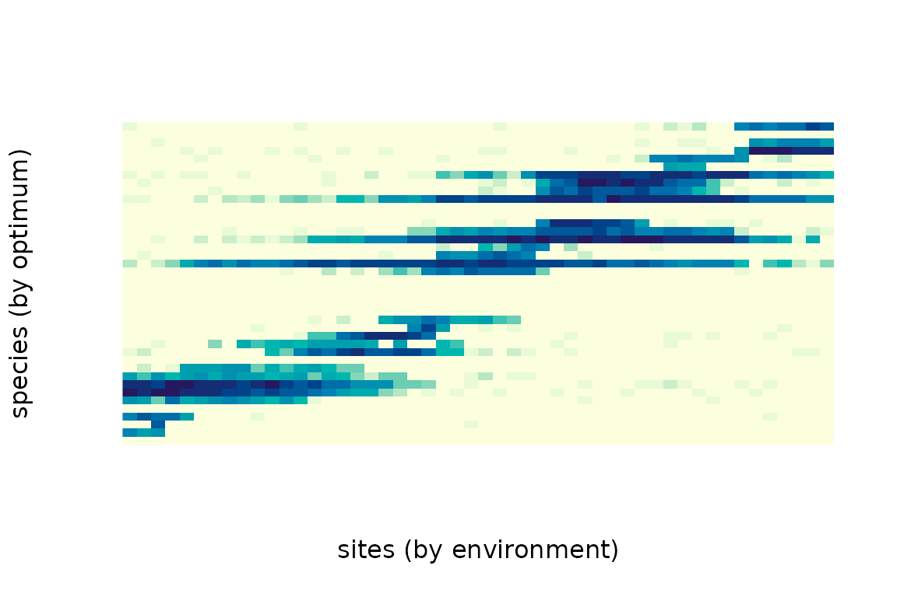
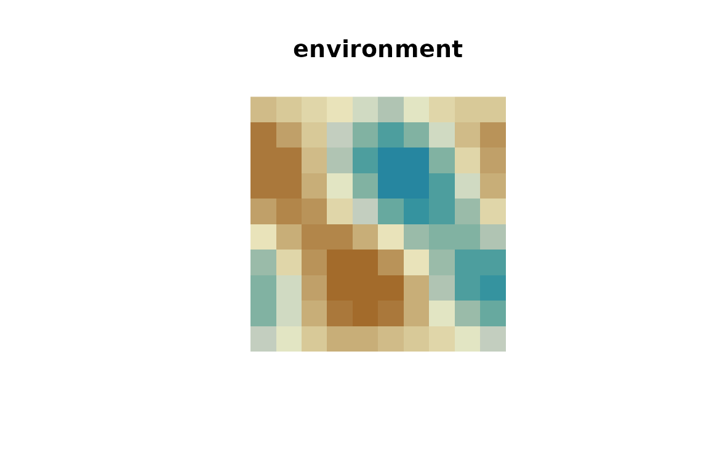

comdynamite simulates metacommunities with the process-based model of Thompson et al. (2020). Each simulation has four ingredients:
- a landscape: sites, their environment and how individuals disperse among them;
- species traits: environmental optimum, niche breadth and maximum growth rate, with or without phylogenetic signal;
- a competition matrix;
- the dispersal rate.
library(comdynamite)
set.seed(42)A first metacommunity
We draw a tree of 40 species, give their optima a strong phylogenetic
signal (Brownian motion, lambda = 1), and let close
relatives compete more strongly.
tr <- ape::rcoal(40)
traits <- species_traits(tr, lambda = 1)
alpha <- competition_matrix(tr, type = "phylo", inter_max = 0.1)
land <- landscape_implicit(n_sites = 50)
sim <- simulate_metacommunity(land, traits, alpha, dispersal = 0.01, n_steps = 500)
sim
#> <mc_sim> 50 sites x 40 species
#> species persisting: 29 of 40
#> mean local richness: 10.9sim$abundance holds the abundance of each species at
each site at the last step. Ordering sites by their environment and
species by their optimum shows the sorting of species along the
gradient:
a <- sim$abundance[order(land$env), order(traits$optimum)]
image(log1p(a), xlab = "sites (by environment)", ylab = "species (by optimum)",
axes = FALSE, col = hcl.colors(20, "YlGnBu", rev = TRUE))
Species sorting and mass effects
Dispersal changes the regime. With low dispersal, species occur where the environment suits them (species sorting); with high dispersal, they also occur in unsuitable sites that are kept supplied by immigrants (mass effects), so local richness increases and composition tracks the environment less closely.
regimes <- c(sorting = 0.01, mass_effects = 0.5)
res <- lapply(regimes, function(d)
simulate_metacommunity(land, traits, alpha, dispersal = d, n_steps = 500))
sapply(res, function(s) c(
mean_richness = mean(rowSums(s$abundance > 0)),
persisting = sum(colSums(s$abundance) > 0)
))
#> sorting mass_effects
#> mean_richness 10.74 19.74
#> persisting 30.00 21.00Spatially explicit landscapes
landscape_grid() places sites on a grid, by default
wrapped as a torus, with a spatially autocorrelated environment and an
exponential dispersal kernel.
grid <- landscape_grid(side = 10, env_bandwidth = 2, disp_scale = 2)
image(matrix(grid$env, 10, 10), asp = 1, axes = FALSE,
col = hcl.colors(20, "Earth"), main = "environment")
sim_sp <- simulate_metacommunity(grid, traits, alpha, dispersal = 0.1, n_steps = 500)
sim_sp
#> <mc_sim> 100 sites x 40 species
#> species persisting: 29 of 40
#> mean local richness: 19.4With spatial structure, sites are no longer exchangeable, so
permuting sites at random is not a valid null model.
torus_permutations() gives the rearrangements of a torus
(translations and the eight symmetries of the square) that keep all
distances among sites, and therefore the spatial autocorrelation of the
environment:
perms <- torus_permutations(10)
dim(perms)
#> [1] 799 100
# the environment under the first rearrangement
env_perm <- grid$env[perms[1, ]]An environment that changes over time
env_over_time() adds autocorrelated temporal
fluctuations to the environment of each site, and
record_steps keeps abundances at chosen steps.
et <- env_over_time(land$env, n_steps = 500, rho = 0.95, sd = 5)
sim_t <- simulate_metacommunity(land, traits, alpha, dispersal = 0.01, n_steps = 500,
env_time = et, record_steps = seq(100, 500, 100))
apply(sim_t$history > 0, 3, function(x) mean(rowSums(x)))
#> step100 step200 step300 step400 step500
#> 12.96 10.18 9.84 9.22 9.54Traits under one or several adaptive optima
traits_ou() simulates traits under an Ornstein-Uhlenbeck
process (Hansen 1997). With alpha = 0 it is Brownian
motion; with alpha > 0 traits are pulled towards an
optimum, and paint_regimes() gives clades their own optimum
(multi-peak OU; Butler & King 2004).
pool <- ape::rcoal(32)
node <- ape::getMRCA(pool, pool$tip.label[1:8])
in_clade <- rownames(traits_ou(pool)) %in% ape::extract.clade(pool, node)$tip.label
reg <- paint_regimes(pool, nodes = node)
x_ou <- traits_ou(pool, alpha = 2, theta = c(`0` = 0, `1` = 5), regimes = reg)
tapply(x_ou[, 1], ifelse(in_clade, "clade (optimum 5)", "rest (optimum 0)"), mean)
#> clade (optimum 5) rest (optimum 0)
#> 4.7336002 0.2932017Rule-based assembly (Kraft et al. 2007)
Besides population dynamics, comdynamite can assemble a local community from the regional pool by fixed rules, as in Kraft et al. (2007). Species are removed one at a time until the community reaches the chosen size:
-
"limiting_similarity": the GAUSE algorithm of Colwell & Winkler (1984), which Kraft et al. (2007) used for competition. From the pair of species closest in trait space, the one with the smaller sum of distances to the remaining species is removed, and so on. -
"filtering": the species farthest from a niche optimum (the ancestral state or a derived corner of trait space) are removed first. -
"neutral": species are drawn at random.
pool <- ape::rcoal(32)
x <- traits_ou(pool, n_traits = 2)
assemble_community(x, size = 16, rule = "limiting_similarity")$community
#> [1] "t18" "t25" "t31" "t29" "t8" "t1" "t4" "t12" "t17" "t19" "t27" "t5"
#> [13] "t15" "t13" "t3" "t9"Over many pools, the mean phylogenetic distance (MPD) among community members shows the expected contrast when traits evolve by Brownian motion:
mpd <- function(tree, sp) mean(as.dist(ape::cophenetic.phylo(tree)[sp, sp]))
rules <- c("limiting_similarity", "filtering", "neutral")
res <- replicate(100, {
pool <- ape::rcoal(32)
x <- traits_ou(pool, n_traits = 2)
sapply(rules, function(r) mpd(pool, assemble_community(x, 16, r)$community))
})
rowMeans(res)
#> limiting_similarity filtering neutral
#> 2.152022 1.620627 2.052095On average, limiting similarity keeps more distant relatives than neutral assembly (higher MPD), and filtering keeps closer relatives (lower MPD), although single replicates vary.
Differences from Thompson et al. (2020)
The model follows the published equations. Two conventions differ:
-
sigmais the standard deviation of the Gaussian response, so it equalssqrt(2)times the niche breadth parameter of Thompson et al. (2020); -
alpha[j, k]is the effect of species k on species j.
env_over_time() is a simple autoregressive generator,
not the one used by Thompson et al. (2020).
References
Butler, M. A., & King, A. A. (2004). Phylogenetic comparative analysis: a modeling approach for adaptive evolution. The American Naturalist, 164, 683–695. https://doi.org/10.1086/426002
Hansen, T. F. (1997). Stabilizing selection and the comparative analysis of adaptation. Evolution, 51, 1341–1351. https://doi.org/10.1111/j.1558-5646.1997.tb01457.x
Colwell, R. K., & Winkler, D. W. (1984). A null model for null models in biogeography. In D. R. Strong, D. Simberloff, L. G. Abele, & A. B. Thistle (Eds.), Ecological Communities: Conceptual Issues and the Evidence (pp. 344–359). Princeton University Press. https://doi.org/10.1515/9781400857081.344
Kraft, N. J. B., Cornwell, W. K., Webb, C. O., & Ackerly, D. D. (2007). Trait evolution, community assembly, and the phylogenetic structure of ecological communities. The American Naturalist, 170, 271–283. https://doi.org/10.1086/519400
Thompson, P. L., Guzman, L. M., De Meester, L., Horváth, Z., Ptacnik, R., Vanschoenwinkel, B., Viana, D. S., & Chase, J. M. (2020). A process-based metacommunity framework linking local and regional scale community ecology. Ecology Letters, 23, 1314–1329. https://doi.org/10.1111/ele.13568